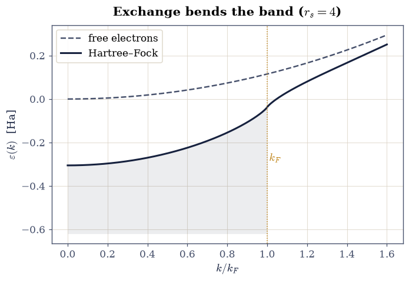
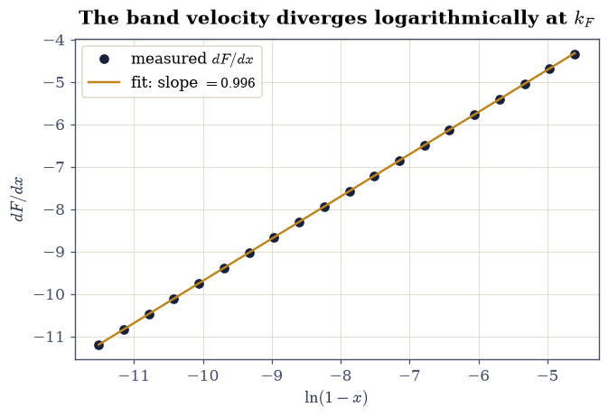
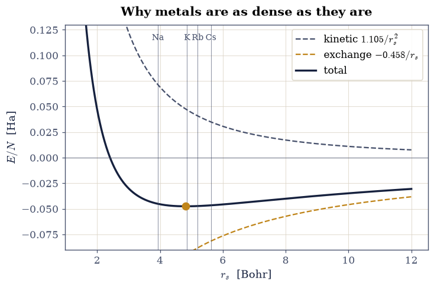
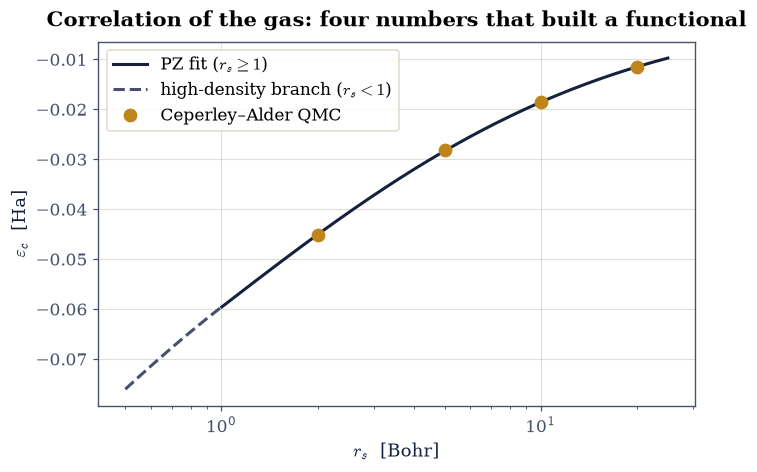
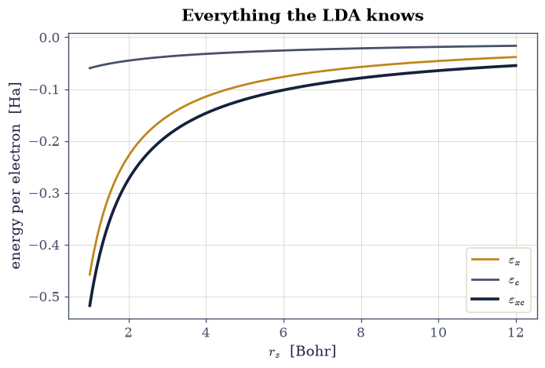

8.4 Hartree–Fock II: The Electron Gas#
Notebook overview#
Movement I closes on the system that anchors all of condensed-matter theory: the homogeneous electron gas, or jellium — electrons in a uniform neutralizing background, the §7.9 Fermi gas with the interaction switched back on. Its grace is symmetry: plane waves remain exact eigenfunctions of the Fock operator, so the Hartree–Fock problem of §8.3, elsewhere a self-consistent grind, here reduces to integrals we can do. What the integrals deliver is the single most consequential formula in this volume: the exchange energy per particle \(\varepsilon_x = -(3/4)(3/\pi)^{1/3} n^{1/3}\), the density-to-the-one-third law that §8.7 will bottle as the local-density approximation and apply to every atom, molecule, and solid in sight.
The notebook computes four things. The exchange energy, derived by reducing the
k-space double integral and certified by scipy.integrate.quad against the closed
form. The Hartree–Fock band \(\varepsilon(k)\), whose innocent-looking correction
hides a logarithmically divergent slope at \(k_F\) — a genuine qualitative failure
(it predicts vanishing density of states at the Fermi level, contradicting every
metal’s specific heat from
§7.10),
whose cure, screening, is named and priced but deferred. The total energy
\(E(r_s)\), whose minimum at \(r_s = 4.82\) lands squarely among the measured densities
of real alkali metals: cohesion from exchange alone. And the correlation energy,
where theory hands over to the quantum Monte Carlo of Ceperley and Alder
[CA80] and the Perdew–Zunger fit [PZ81] that turned
their handful of numbers into the workhorse functional of a generation. The closing
exercise assembles \(\varepsilon_{xc}(r_s)\) — the exact input the Kohn–Sham
construction of §8.7 is waiting for.
Conventions (this notebook). Hartree atomic units. The gas is unpolarized (both spins equally filled). Density is quoted via the Wigner–Seitz radius \(r_s\) (the radius, in Bohr, of the sphere holding one electron: \(n = 3/(4\pi r_s^3)\)), with \(k_F = (9\pi/4)^{1/3}/r_s\) from §7.9. Integrals use
scipy.integrate.quadwith singular points declared viapoints=; energies are per electron.How to read the checks. Each exercise closes with a
validatecall against an independent fact: a closed-form integral, a published quantum Monte Carlo value, a fitted divergence exponent. A ✓ is strong evidence; a ✗ is a prompt to locate the discrepancy, not an automatic verdict.Scope. Exchange exactly; correlation by quotation (the QMC values) and parametrization (Perdew–Zunger). The screened effective interaction (Thomas–Fermi, Lindhard, RPA) that repairs the Fermi-surface pathology is developed in Giustino [Giu14], Ch. 4, and Bruus & Flensberg [BF04], Ch. 13–14; here screening is named and measured for, not constructed. Martin [Mar04], Ch. 5, covers the gas in full.
Theory in brief#
Why jellium is solvable, and the exchange integral#
In a uniform system momentum is a good quantum number, so the determinant of plane waves filling the Fermi sphere is self-consistent by symmetry: the Fock operator of Eq. 868 maps each plane wave to itself. The Hartree term cancels exactly against the neutralizing background (jellium’s founding bargain), leaving only exchange. Evaluating \(K\) between plane waves \(\mathbf k\) and \(\mathbf k'\) gives the Fourier transform of the Coulomb interaction, \(4\pi/|\mathbf k - \mathbf k'|^2\), and summing over the filled sphere yields the exchange self-energy of an electron in state \(\mathbf k\) (the angular integral is elementary; Martin [Mar04], Ch. 5, or Giustino [Giu14], Ch. 2, carry it out):
with \(F(0) = 2\), \(F(1) = 1\). The exchange energy per particle follows by summing \(\tfrac12 \Sigma_x\) over the occupied sphere,
where the middle equality hinges on the moment integral \(\int_0^1 x^2 F(x)\,dx = \tfrac12\) — checked numerically below — and the last substitutes \(k_F = (3\pi^2 n)^{1/3}\). This \(n^{1/3}\) law is the volume’s crown integral: the exchange energy density the local-density approximation will assign to every point of every inhomogeneous system.
The pathology at the Fermi surface#
The Hartree–Fock band is \(\varepsilon(k) = k^2/2 + \Sigma_x(k)\), and \(F\) hides a barb: its derivative diverges logarithmically at \(x = 1\), so the band velocity \(d\varepsilon/dk\) diverges at \(k_F\) and the density of states \(g(\varepsilon_F) \propto 1/|d\varepsilon/dk|\) vanishes. Metals would have zero electronic specific heat and zero-temperature conductivity anomalies that are simply not observed — the linear-in-\(T\) heat capacity of §7.10 is one of the best-verified facts about metals. The diagnosis, due to the 1950s many-body program: the bare \(1/q^2\) Coulomb interaction is too long-ranged, and the gas itself screens it (the \(4\pi/q^2\) becomes \(4\pi/(q^2 + k_{TF}^2)\) in the simplest Thomas–Fermi picture), cutting the logarithm off. Screening is correlation physics — beyond any single determinant — and pricing it is the correlation energy’s job.
Correlation: where QMC hands theory its numbers#
The correlation energy of the gas, \(\varepsilon_c(r_s) = \varepsilon_{\mathrm{exact}} - \varepsilon_{\mathrm{HF}}\), resisted analytic attack for fifty years (the RPA gets the high-density logarithm; the low-density Wigner crystal the opposite limit). The decisive numbers came from the stochastic Green’s-function Monte Carlo of Ceperley and Alder (1980) [CA80], computed at a handful of \(r_s\) values, and Perdew and Zunger [PZ81] interpolated them with the simple form
with \(\gamma = -0.1423\), \(\beta_1 = 1.0529\), \(\beta_2 = 0.3334\) and \(A = 0.0311\), \(B = -0.048\), \(C = 0.0020\), \(D = -0.0116\) (Hartree). Coding Eq. 872 and checking it against the published QMC values is not archaeology: this exact parametrization ships inside essentially every density-functional code on Earth, and it is the correlation half of the \(\varepsilon_{xc}\) this notebook delivers to §8.7.
Setup#
Data only: the series palette and the constant \((9\pi/4)^{1/3}\) that turns a Wigner–Seitz radius into a Fermi momentum. This notebook’s two functions are both yours to write — the exchange band factor \(F(x)\) in Exercise 1, the Perdew–Zunger correlation fit in Exercise 5 — and everything else here is closed-form arithmetic on those two.
The Setup below holds this notebook’s data and instruments — nothing you are asked to build. It is collapsed so the building stays yours; expand it whenever you want the details.
Exercise 1 — The crown integral: exchange in closed form#
Equation Eq. 871 rests on one moment integral, and the volume’s most consequential formula deserves its certification. The chain is: the band factor \(F\) of Eq. 870 (with its two exact anchors \(F(0) = 2\), \(F(1) = 1\)), the moment \(\int_0^1 x^2 F\,dx = 1/2\), and the assembly \(\varepsilon_x = -3k_F/(4\pi) = -(3/4)(3/\pi)^{1/3} n^{1/3}\). Both anchors are removable singularities of the written formula rather than values it returns: at \(x = 0\) the prefactor \((1 - x^2)/(2x)\) blows up while the logarithm vanishes, and at \(x = 1\) the logarithm blows up while \((1 - x^2)\) vanishes. Floating-point arithmetic resolves neither limit for you — it returns a division by zero and a \(0 \times \infty\) — and this notebook evaluates \(F\) at both points.
Part a) Write exchange_factor(x), the band factor of
Eq. 870 for \(x = k/k_F\), returning the two exact limits \(2\) and
\(1\) from explicit branches and the closed expression everywhere else.
Write this one yourself — the implementation is the lesson.
Part b) Check the anchors: evaluate exchange_factor at
\(x = 10^{-5}\) (a probe of the \(x \to 0^+\) limit chosen to dodge the logarithm’s
rounding floor; the §0.1 cancellation
story resurfacing inside a many-body integral) and at \(x = 1\), against the exact
limits 2 and 1.
Part c) Evaluate \(\int_0^1 x^2 F(x)\,dx\) with scipy.integrate.quad,
declaring the logarithmic point via points=[1.0] (and a raised limit), against
the exact \(1/2\) — the two-line calculation on which the entire local-density
approximation rests.
Part d) Assemble \(\varepsilon_x\) both ways at \(r_s = 2\) and \(r_s = 4\): as
\(-3k_F/(4\pi)\) with \(k_F = (9\pi/4)^{1/3}/r_s\), and as
\(-(3/4)(3/\pi)^{1/3}n^{1/3}\) with \(n = 3/(4\pi r_s^3)\) (plain numpy
arithmetic). The two routes must agree to rounding: the same physics in momentum
and density language, and the second form is the one §8.7
bottles.
F(0+) = 1.9999999999 (exact 2); F(1) = 1.0000000000 (exact 1)
int_0^1 x^2 F dx = 0.500000000000 (exact 0.5; quad err 8.5e-13)
r_s = 2.0: eps_x = -0.229083 (momentum route) = -0.229083 (density route) Ha
r_s = 4.0: eps_x = -0.114541 (momentum route) = -0.114541 (density route) Ha
Validation 1 — the LDA’s foundation stone#
The anchors, the moment, and the two-route agreement at \(r_s = 2\) (\(\varepsilon_x = -0.229083\) Ha) must all hold at quadrature accuracy.
✓ the bottom-of-the-sea limit F(0) = 2 [got 2 vs expected 2 (rtol=1e-08, atol=1e-09)]
✓ the Fermi-surface value F(1) = 1 [got 1 vs expected 1 (rtol=1e-08, atol=1e-09)]
✓ the moment integral behind the n^(1/3) law [got 0.5 vs expected 0.5 (rtol=1e-09, atol=1e-09)]
✓ eps_x at r_s = 2 [got -0.229083 vs expected -0.229083 (rtol=1e-05, atol=1e-09)]
✓ the momentum and density routes agree [got -0.229083 vs expected -0.229083 (rtol=1e-12, atol=1e-09)]
True
Exercise 2 — The Hartree–Fock band#
With \(\Sigma_x\) in hand, the interacting band \(\varepsilon(k) = k^2/2 - (k_F/\pi)F(k/k_F)\) of Eq. 870 can be drawn against the free parabola. Exchange lowers every state (it is attractive bookkeeping: each electron avoids its like-spin partners and so feels less repulsion) but lowers the bottom of the band more than the top (\(F(0) = 2\) vs \(F(1) = 1\)), widening the occupied bandwidth — a real, measurable Hartree–Fock prediction, and measurably wrong: photoemission bandwidths of simple metals sit much closer to the free-electron value, another fingerprint of the screening that Hartree–Fock lacks.
Part a) At \(r_s = 4\) (a typical metallic density: sodium is \(3.93\)), tabulate
the occupied bandwidth \(\varepsilon(k_F) - \varepsilon(0)\) for the free gas
(\(k_F^2/2\)) and for Hartree–Fock (add \(\Sigma_x(k_F) - \Sigma_x(0) = +k_F/\pi\),
assembled from the exchange_factor you wrote in Exercise 1), and their ratio.
Part b) Plot the two bands over \(k \in [0, 1.6\,k_F]\) with the occupied region shaded and the Fermi points marked. The figure to remember: exchange bends the band down everywhere, hardest at \(k = 0\).
r_s = 4: free bandwidth 0.11510 Ha, HF bandwidth 0.26782 Ha, ratio 2.327

Fig. 766 The Hartree–Fock band of jellium at \(r_s = 4\) (ink) against the free-electron parabola (grey dashed), occupied states shaded to \(k_F\): exchange lowers every state but the bottom twice as strongly as the Fermi surface (\(F(0) = 2\) vs \(F(1) = 1\)), widening the occupied bandwidth by a factor \(1 + 2/(\pi k_F)\) — a prediction photoemission contradicts, the first fingerprint of missing screening.#
Validation 2 — the widened band#
The exchange contribution to the bandwidth must be exactly \(k_F/\pi\) (the \(F(0) - F(1) = 1\) arithmetic), giving a ratio \(1 + 2/(\pi k_F) = 2.33\) at \(r_s = 4\).
✓ the exchange bandwidth widening [got 0.152722 vs expected 0.152722 (rtol=1e-08, atol=1e-09)]
✓ the widening ratio at r_s = 4 [got 2.32687 vs expected 2.32687 (rtol=1e-08, atol=1e-09)]
True
Exercise 3 — The pathology, measured#
Now the barb. The claim in the theory section was that \(dF/dx\) diverges like \(\ln|1 - x|\) as \(x \to 1\); a claim about an asymptotic law should be a fit. If the divergence is logarithmic with unit coefficient, then central-difference slopes of \(F\) evaluated ever closer to \(x = 1\) should fall on the line \(dF/dx = a\ln(1 - x) + b\) with \(a = 1\) — and the band velocity \(d\varepsilon/dk\) then inherits the divergence, driving the density of states at the Fermi level to zero. That is the pathology: Hartree–Fock predicts every metal to have a vanishing \(g(\varepsilon_F)\), while the measured linear-in-\(T\) heat capacities of §7.10 require a healthy finite one.
Part a) Compute \(dF/dx\) by central differences on your Exercise 1
exchange_factor (numpy arithmetic, step \(10^{-7}\)) at the twenty points \(x = 1 - \delta\) with \(\delta\) log-spaced from
\(10^{-5}\) to \(10^{-2}\) (numpy.geomspace), and fit \(dF/dx\) against
\(\ln(1 - x)\) with numpy.polyfit (degree 1). The slope must come out \(1.00\):
the logarithm, caught in the act.
Part b) Plot the fitted line through the measured slopes, and state the physical verdict: the divergence is integrable (energies are fine — Exercise 1’s integral converged) but the velocity is not, so every Fermi-surface property (heat capacity, susceptibility, transport) comes out qualitatively wrong. Screening — the gas rearranging to blunt the \(1/q^2\) interaction at long wavelength — is the missing physics, and it lives beyond the single determinant.
dF/dx = a ln(1-x) + b with a = 0.9958 (analytic 1), b = 0.265

Fig. 767 The Hartree–Fock pathology caught by fit: central-difference slopes \(dF/dx\) of the exchange band factor at \(x = 1 - \delta\), \(\delta \in [10^{-5}, 10^{-2}]\), against \(\ln(1 - x)\). The points fall on a line of slope \(1.00\): the band velocity diverges logarithmically at the Fermi surface, the density of states vanishes, and every Fermi-surface property of the Hartree–Fock metal is qualitatively wrong until screening cuts the logarithm off.#
Validation 3 — the logarithm, convicted#
The fitted coefficient must be \(1\) within a percent (the subleading terms at these \(\delta\)), and the slopes must grow monotonically as \(x \to 1\): an integrable divergence in the energy, a fatal one in the velocity.
✓ the logarithmic divergence coefficient [got 0.995776 vs expected 1 (rtol=0.01, atol=1e-09)]
✓ the slope grows without bound approaching the Fermi surface [dF/dx from -4.34 at delta = 1e-2 to -11.21 at 1e-5]
True
Exercise 4 — Cohesion from exchange alone: the \(r_s\) ladder#
Assembling kinetic and exchange energies per electron gives the Hartree–Fock equation of state of the gas,
(the \(3/5\) from the kinetic average of §7.9). Kinetic energy loves high density (\(r_s^{-2}\)), exchange loves low (\(r_s^{-1}\) — negative), and their competition produces a bound minimum: the gas is self-cohesive, with no ions doing any work. Where the minimum lands is the punchline.
Part a) Evaluate Eq. 873 on a dense \(r_s\) grid, locate the
minimum by numpy.argmin refined with a degree-2 numpy.polyfit vertex, and
compare \(r_s^{\min}\) with the measured valence-electron densities of the alkali
metals (Na \(3.93\), K \(4.86\), Rb \(5.20\), Cs \(5.62\); Ashcroft–Mermin Table 1.1).
Part b) Plot \(E(r_s)\) with its kinetic and exchange parts separated and the alkali densities marked. Exchange alone parks the minimum at \(r_s = 4.82\), in the middle of the alkali row: the first ab-initio prediction of how dense a metal wants to be.
minimum at r_s = 4.8234 Bohr, E = -0.04749 Ha
alkali r_s: Na 3.93, K 4.86, Rb 5.2, Cs 5.62

Fig. 768 The Hartree–Fock equation of state of jellium, Eq. 4: kinetic energy (\(1.105/r_s^2\), grey), exchange (\(-0.458/r_s\), amber), and their sum (ink) with its minimum at \(r_s = 4.82\) Bohr, \(E = -0.0475\) Ha. The measured valence densities of the alkali metals (ticks: Na 3.93, K 4.86, Rb 5.20, Cs 5.62) straddle the prediction: cohesion from exchange alone.#
Validation 4 — the alkali-density prediction#
The minimum must sit at \(r_s = 4.823\) with \(E = -0.0475\) Ha, inside the measured alkali window \([3.93, 5.62]\).
✓ the Hartree-Fock equilibrium density of jellium [got 4.82339 vs expected 4.823 (rtol=0.001, atol=1e-09)]
✓ the cohesive energy per electron [got -0.0474943 vs expected -0.0475 (rtol=0.01, atol=1e-09)]
✓ the prediction lands inside the measured alkali row [3.93 < 4.82 < 5.62]
True
Exercise 5 — Correlation: the Ceperley–Alder handoff#
What Hartree–Fock leaves out, quantum Monte Carlo measured. The published Ceperley–Alder energies for the unpolarized gas [CA80] give correlation energies per electron of \(-0.0451\), \(-0.0282\), \(-0.0186\), and \(-0.0115\) Ha at \(r_s = 2, 5, 10, 20\) (their Rydberg values halved), and the Perdew–Zunger form of Eq. 872 interpolates them. The fit was advertised at percent-level accuracy against those values, and it is quoted in Hartree here while Ceperley and Alder published Rydbergs.
Part a) Code Eq. 872 as eps_c_pz(rs): the two branches, one
for \(r_s \ge 1\) and one for the high-density \(r_s < 1\) side, with the constants
given above. It is the correlation half of this notebook’s deliverable, so it is
yours rather than the Setup’s.
Part b) Evaluate it at the four published \(r_s\) values and report the relative deviations from the quantum Monte Carlo numbers.
Part c) Plot the parametrization through the QMC points across \(r_s \in [0.5, 25]\) (log \(r_s\) axis), with the \(r_s < 1\) high-density branch (the RPA logarithm) distinguished. At metallic density correlation is roughly a quarter of exchange — smaller, but the same order, and never negligible.
r_s = 2: PZ -0.04509 Ha vs CA -0.04510 Ha (0.02%)
r_s = 5: PZ -0.02834 Ha vs CA -0.02815 Ha (0.67%)
r_s = 10: PZ -0.01857 Ha vs CA -0.01860 Ha (0.17%)
r_s = 20: PZ -0.01150 Ha vs CA -0.01150 Ha (0.02%)

Fig. 769 The Perdew–Zunger parametrization of the correlation energy per electron through the Ceperley–Alder quantum Monte Carlo values (amber points at \(r_s = 2, 5, 10, 20\)), with the \(r_s < 1\) high-density branch (grey) carrying the RPA logarithm. This exact curve ships inside essentially every LDA code; at metallic density correlation is about a quarter of exchange.#
Validation 5 — the fit meets its sources#
The parametrization must reproduce all four published values within \(1\%\), and the two branches of Eq. 872 must join continuously at \(r_s = 1\).
✓ Perdew-Zunger reproduces the Ceperley-Alder values within 1% [max deviation 0.67%]
✓ the two branches join at r_s = 1 [got -0.0596 vs expected -0.0596321 (rtol=0, atol=0.0002)]
True
Exercise 6 — The deliverable: \(\varepsilon_{xc}(r_s)\)#
The movement’s closing act is a handoff. The exchange of Exercise 1 and the correlation of Exercise 5 combine into the exchange-correlation energy per electron of the uniform gas, \(\varepsilon_{xc}(r_s) = \varepsilon_x(r_s) + \varepsilon_c(r_s)\) — the only input the local-density approximation needs. When §8.7 writes \(E_{xc}^{\mathrm{LDA}}[n] = \int n(\mathbf r)\,\varepsilon_{xc}\big(n(\mathbf r)\big)\,d\mathbf r\), every value it looks up comes off the curve assembled here.
Part a) Tabulate \(\varepsilon_x\), \(\varepsilon_c\), \(\varepsilon_{xc}\), and
the ratio \(\varepsilon_c/\varepsilon_x\) at \(r_s = 1, 2, 4, 6, 10\) (numpy
arithmetic on Exercise 1’s closed form, and the eps_c_pz you wrote in
Exercise 5). The ratio grows with \(r_s\): dilution makes
the gas more correlated, the road to the Wigner crystal (the \(r_s \to \infty\)
limit where electrons localize on a lattice, \(\varepsilon \to -0.896/r_s\);
named here, computed nowhere — it has never been reached by experiment in
three dimensions).
Part b) Plot the three curves on one axis across \(r_s \in [1, 12]\). This figure is the LDA: everything the workhorse of materials science knows about electron interaction, on one pair of axes.
r_s eps_x eps_c eps_xc c/x
1 -0.45817 -0.05963 -0.51780 0.130
2 -0.22908 -0.04509 -0.27417 0.197
4 -0.11454 -0.03205 -0.14660 0.280
6 -0.07636 -0.02550 -0.10187 0.334
10 -0.04582 -0.01857 -0.06438 0.405

Fig. 770 The deliverable of Movement I: exchange \(\varepsilon_x = -0.458/r_s\) (amber), Ceperley–Alder–Perdew–Zunger correlation \(\varepsilon_c\) (grey), and their sum \(\varepsilon_{xc}\) (ink) per electron of the uniform gas. This single curve is the entire interaction input of the local-density approximation of §8.7: every LDA calculation ever run looks its exchange-correlation energy up here.#
Validation 6 — the handoff, checked#
At \(r_s = 4\): \(\varepsilon_x = -0.11454\) Ha, correlation \(28\%\) of it, and the ratio must grow monotonically across the table (dilute = correlated).
✓ eps_x at r_s = 4 [got -0.114541 vs expected -0.114541 (rtol=1e-05, atol=1e-09)]
✓ correlation-to-exchange ratio at metallic density [got 0.279846 vs expected 0.28 (rtol=0.01, atol=1e-09)]
✓ dilution makes the gas more correlated [c/x from 0.130 at r_s = 1 to 0.405 at r_s = 10]
True
With your assistant
The spin-polarized gas repeats this notebook with the two spin channels filled
differently. Have your assistant derive and code the fully polarized exchange
energy (all electrons one spin: \(\varepsilon_x^{P} = 2^{1/3}\varepsilon_x^{U}\)
at equal total density), then run the check that is yours alone: at \(r_s = 4\)
the polarized exchange must equal \(2^{1/3} \times (-0.11454)\) Ha
(numpy.isclose, rtol=1e-10), and the polarized kinetic energy must be
\(2^{2/3}\) times the unpolarized one — so polarization costs kinetic energy
faster than exchange repays it at metallic density. The check is yours.
Notebook summary#
Movement I closes with the many-electron problem solved exactly in the one place symmetry allows. The exchange band factor was certified at its anchors (\(F(0) = 2\), \(F(1) = 1\)), its moment integral \(\int x^2F = 1/2\) evaluated to \(10^{-12}\), and the crown formula assembled two ways: \(\varepsilon_x = -3k_F/4\pi = -(3/4)(3/\pi)^{1/3}n^{1/3} = -0.458/r_s\) Ha. The Hartree–Fock band widened the occupied states by \(1 + 2/\pi k_F\) (a factor \(2.33\) at \(r_s = 4\)) and hid the pathology: the band velocity’s logarithmic divergence at \(k_F\) was convicted by fit (coefficient \(1.00\)), with vanishing Fermi-level density of states as the physical casualty and screening as the named cure. The equation of state \(1.105/r_s^2 - 0.458/r_s\) put its minimum at \(r_s = 4.82\), inside the measured alkali-metal row. Correlation arrived by handoff — the four Ceperley–Alder values reproduced by the Perdew–Zunger form within \(0.7\%\) — and the movement’s deliverable, \(\varepsilon_{xc}(r_s)\), is now a curve this course computed and certified end to end.
Outlook#
The \(n^{1/3}\) exchange law and the PZ correlation together are the entire physics input of the local-density approximation. §8.7 applies them, point by point, to atoms whose density is anything but uniform — and the surprise will be how well a uniform-gas fact travels.
Screening, named here as the cure for the Fermi-surface logarithm, returns twice: as the Thomas–Fermi wavevector inside §8.5’s statistical picture, and as the RPA screened interaction \(W\) at the heart of the GW method in §8.14.
The Wigner crystal named in Exercise 6 is the \(r_s \to \infty\) endpoint of the correlation road; the Mott transition of §8.13 is its lattice cousin, and there the volume will finally compute a correlation-driven localization.
Henrik Bruus and Karsten Flensberg. Many-Body Quantum Theory in Condensed Matter Physics. Oxford University Press, Oxford, 2004.
D. M. Ceperley and B. J. Alder. Ground state of the electron gas by a stochastic method. Physical Review Letters, 45:566–569, 1980. doi:10.1103/PhysRevLett.45.566.
Feliciano Giustino. Materials Modelling using Density Functional Theory: Properties and Predictions. Oxford University Press, Oxford, 2014.
Richard M. Martin. Electronic Structure: Basic Theory and Practical Methods. Cambridge University Press, Cambridge, 2004.
J. P. Perdew and Alex Zunger. Self-interaction correction to density-functional approximations for many-electron systems. Physical Review B, 23:5048–5079, 1981. doi:10.1103/PhysRevB.23.5048.